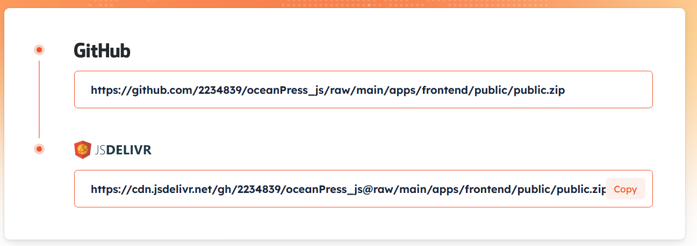
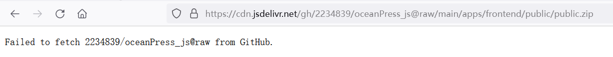
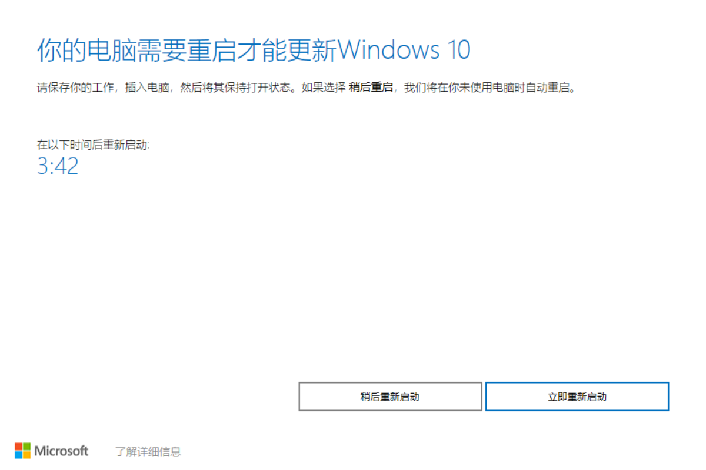

首页
9月
cloudreve pr：
https://github.com/cloudreve/frontend/pull/167
fix_ 前端无法正常 put 文件到 oss by 2234839 · Pull Request 167 · cloudreve_frontend 2023_9_21 21_29_04.html
jsdelivr 无法获取 github 上的文件
我以为官网生成的链接一定是正确的，但 raw 的链接显然它没有做处理

但copy
https://cdn.jsdelivr.net/gh/2234839/oceanPress_js@raw/main/apps/frontend/public/public.zip
后无法访问

Failed to fetch 2234839/oceanPress_js@raw from GitHub.
解决方案：是路径拼接不正确，直接在浏览器访问那个项目的目录
https://fastly.jsdelivr.net/gh/2234839/oceanPress_js/
然后再复制文件链接
https://github.com/jsdelivr/jsdelivr/issues/18529
cloudreve 迁移
因为我只用了oss来存储，数据库用的是sqlite所以直接将数据库文件复制过去，然后将一些头像等文件弄过去之后就ok了
解决问题：
你的设备中缺少重要的安全和质量修复。
Windows 10 更新助手
Windows 10更新助手在您的设备上下载并安装功能更新。 功能更新，例如 Windows 10 版本 1909（又称作 Windows 10 2019 年 11 月更新）提供新功能，并帮助保持系统安全。
下载更新助手
后，你将自动获得这些更新。
